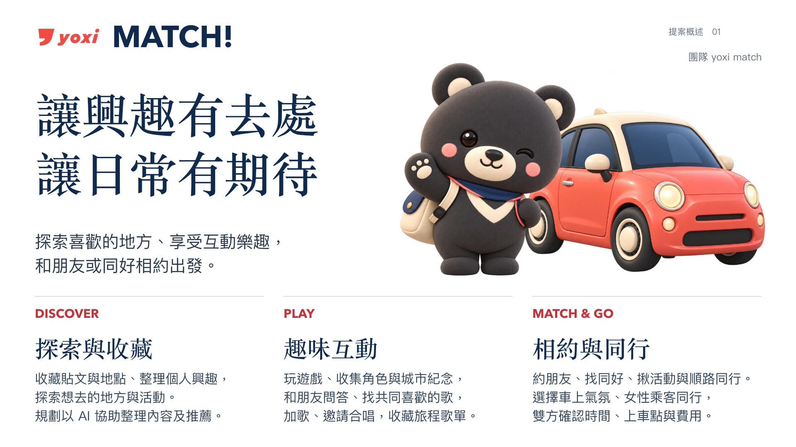

跳到內容
MATCH!
團隊資料
2026 和泰 AI 黑客松
初賽最終版
2026.10.14 提交版，與官網收件 PDF 相同。
下載 PDF
17 頁 · 7.1 MB
看影片
2 分鐘
試用 App
V8 互動原型
閱讀簡報
摘要表
P1｜提案概述
P2
P3
P4
P5
P6
P7
P8
P9
P10
P11
P12
P13
P14
P15
補充資料
‹
2 / 17
›

摘要 1 頁＋正文 15 頁＋補充資料 1 頁
開啟完整 PDF
請開啟上方完整 PDF 閱讀所有頁面。